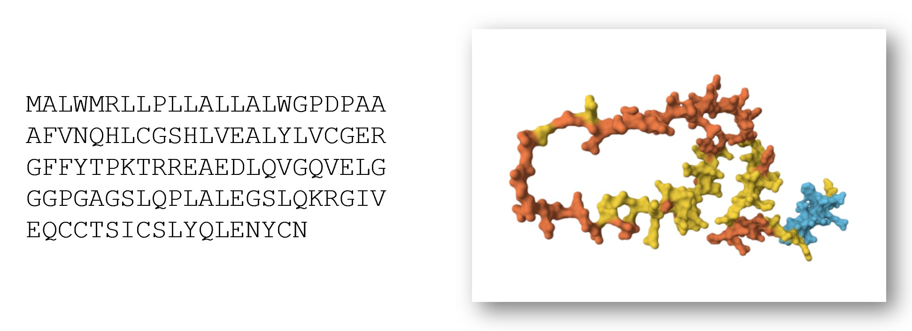

Amidst the barrage of executive orders and announcements Trump made during his first week in office are two which highlight common misunderstandings and obfuscations about the relationship between data, AI, and power. These announcements contradict each other:
- He announced a freeze on communications from scientific and health agencies, stopping them from sharing health data with the public, including infectious disease data about the emerging H5N1 bird flu outbreak. The CDC was unable to send out its weekly MMWR report for the first time in 60 years. Without data, it can be nearly impossible to understand, much less respond, to growing threats.
- He announced a large investment in AI, including promises to use AI to analyze health records, help doctors care for patients, and treat cancer.
Hiding health-related data from the public does not improve the lives of patients, particularly since those with cancer are vulnerable to infection. As I wrote in a previous post, claims that AI will cure cancer are often used as superficial marketing, ignoring the ways that AI could further disempower patients (whose knowledge and experiences are already disregarded by the medical system).
The orders for scientific agencies to pause communications are a particularly vivid and drastic example of the political nature of data. However, choices about what data is collected and who it is made available to have been shaped by social influences, financial factors, and power disparities long before this past week.
Missing Data Sets
A decade ago, Mimi Onuoha coined the concept of Missing Data Sets. She uses this term specifically to refer to “blank spots that exist in spaces that are otherwise data-saturated.” So it’s not just that this data does not exist, but that it ought to exist.
Originally writing in 2016, Onuoha gives the example of how “traditionally there has been little history of standardized and rigorous data collected about police brutality… The group who would make the most sense to monitor this issue—the law enforcement agents who create the data set in the first place—have no incentive to actually gather such data, which could prove incriminating.”
Missing Datasets are not just a USA-based phenomenon. In early 2024, the UK government announced that it would stop collecting and publishing statistics about homeless people’s deaths, even as rising evictions and a housing shortage were making the issue more urgent than ever. Public outcry led the government to reconsider.
As another example, wastewater data provides a reliable indicator of covid rates, even in the absence of testing. The health department in my home state (Queensland, Australia) used to monitor covid wastewater data, but stopped doing so in 2022, even as several other states in Australia have continued to collect and share such data. This was a political decision. The lack of this data for Queensland from late 2022 onwards registers as a blank space compared to other countries and other Australian states, and compared to Queensland’s own record in 2020-2022. There have been multiple covid waves since 2022. This is missing data.
Onuoha explains several reasons that data may be missing. Those who could collect it lack incentives to do so, or in some cases may even want to hide or obscure it. Another possible reason is that the data in question may be of a type that resists straight-forward quantification or doesn’t fit with our current modes of collection. Her work also reminds us that data won’t solve all problems, and that in some cases missing data can function as protection for disadvantaged groups.
Decades of work, not instant magic
Some people mistakenly believe AI can just be sprinkled on a problem to achieve a magic solution, without understanding the many necessary underlying ingredients. The example of AlphaFold, whose creators won a Nobel Prize in Chemistry for their work, disproves these misconceptions. AlphaFold can predict the 3D structures of proteins with unprecedented accuracy. While clever algorithmic innovations were pivotal to AlphaFold, its success would not have been possible without a large, high-quality dataset that thousands of researchers contributed to for decades.

The construction of the dataset that made AlphaFold possible began a full 50 years earlier. The Protein Data Bank (PDB) was announced in 1971 as a database to store information about the 3D structures of proteins. The files were originally shared and distributed using magnetic tape data storage. Initially, just a handful of entries were added to the database each year. By 1980, there were a total of 69 entries present in the database. However, that number grew exponentially, reaching nearly 200,000 entries by 2022. Access to the data was updated from magnetic tapes to the world wide web. In the mid-1990s, a bi-annual competition was created, encouraging teams to write computer program to predict 3D protein structures. The existence and quality of the database and competition are what led to the record-shattering creation of AlphaFold.
AlphaFold wouldn’t have been possible without the rich data of the PDB. Machine learning engineer Abhishaike Mahajan writes, “In my opinion, what Alphafold2 pulled off — applying a clever model to a large body of pre-existing data to revolutionize a field — is something that will be extremely hard to replicate. Why? Because we’re almost out of that pre-existing data. If we had enough, sure, throw ML at it and call it a day, just as Alphafold2 did. But we don’t have that luxury anymore.”
Mahajan argues that “We are running out of data,” and that the next big innovations of AI applied to biology will require new wet-lab techniques to collect larger quantities of different biological data types than currently possible.
AI projects begin at the wrong starting point
Many machine learning projects begin with an existing dataset, and ask “what can we do with this data?” However, this ignores all the data that we don’t have and ends up overlooking many important questions. The harder question is, “what are the biggest questions in your area, and what data would be useful to answering them?”
In some cases, technical limitations prevent the collection of more, better, or different data. In the case of PDB and CASP, creating those datasets required large teams working for decades to produce, curate, and organize data.
One thing that is holding back the application of AI to medicine is lack of the right data. It is not just that medical data may be scattered or hard to access; in many cases, the most interesting variables aren’t being measured or collected at all. Scores of useful and high impact data are not being gathered. For example, widespread medical biases often lead doctors to incorrectly dismiss the pain or physiological symptoms of patients as “anxiety” or “drug-seeking” behavior. In these cases, doctors may fail to record relevant observations or run tests that could gather valuable data. Promises about what AI can achieve with electronic health records must be tempered with the awareness that the data within is too often biased, incorrect, or missing.
As another example, many people have observed that an infection was the trigger for onset of Type 1 Diabetes in themselves or their children, yet they often don’t know which type of virus caused that infection. Determining causality around this requires large longitudinal studies, which are expensive and difficult to run.
AI is great at finding patterns in existing data. However, AI will not be able to solve this problem of missing and erroneous underlying data.
Asking the right questions
The most fundamental machine learning question, prior to the questions I mentioned above, is “what type of society do we want to live in?”
When school districts implemented a computer program to automatically fire supposedly low-performing teachers, there were numerous issues with the underlying algorithm and data. One key type of data used as input was student test scores, which had often been altered due to cheating scandals by school administrators. The algorithms were also based on the dubious assumption that changes in standardized test scores were a reasonable proxy for teacher quality.
Test scores don’t capture a teacher’s creativity, care for their students, or ingenuity. They don’t capture the challenges their particular students are facing, or how those students may grow and flourish apart from test scores.
This is an example of an algorithm where there was low quality data, the wrong data, and faulty assumptions. However, even if it had been implemented differently, the whole premise would still be a terrible idea. Many of us (myself included) find the idea of a society where we use computerized algorithms to fire teachers to be dystopian. The answer to “How can we best use AI to fire teachers?” is that we shouldn’t.
Negative spaces
The decisions around which, where, and how data is collected, and who it is shared with, all exert a strong but often overlooked influence on the shape of scientific research and algorithm creation. As I dive deeper into the intersection of microbiology and machine learning, I am seeking to understand not just the data that I’m shown, but also the factors shaping its collection and the negative spaces of what is missing.
We are in a disturbing era, in which relevant health and safety data that we previously had access to are actively being cut off. Issues of bias and politics that dismiss the viewpoints of marginalized groups were already bad and seem to be worsening.
While promises of AI improving healthcare may seem appealing, systems that ignore patient expertise risk building on faulty premises and causing more harm than good.
Further Reading
- Lessons from archives: strategies for collecting sociocultural data in machine learning by Eun Seo Jo and Timnit Gebru, on lessons machine learning practitioners could learn from the library sciences
- On Missing Data Sets by Mimi Onuoha
- The end of forgetting: Strategic agency beyond the panopticon by Jonah Bossewitch and Aram Sinnreich, on how information flow relates to power dynamics
- “AI will cure cancer” misunderstands both AI and medicine by Rachel Thomas
- Avoiding Data Disasters by Rachel Thomas
You can subscribe to be notified of new blog posts by submitting your email below:
I look forward to reading your responses. Create a free GitHub account to comment below.